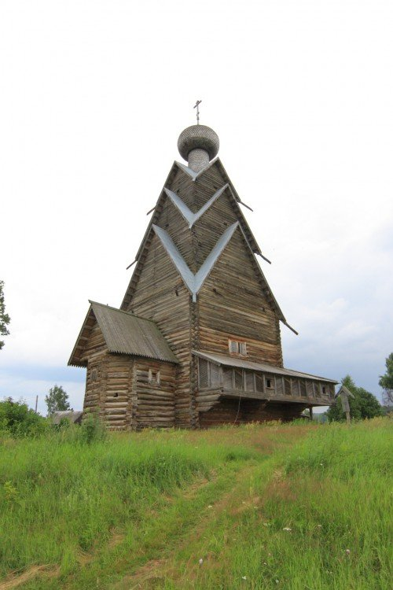
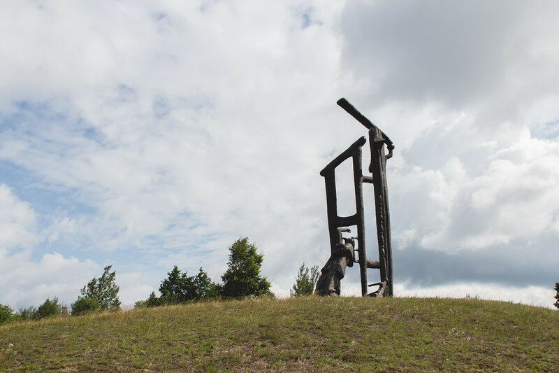
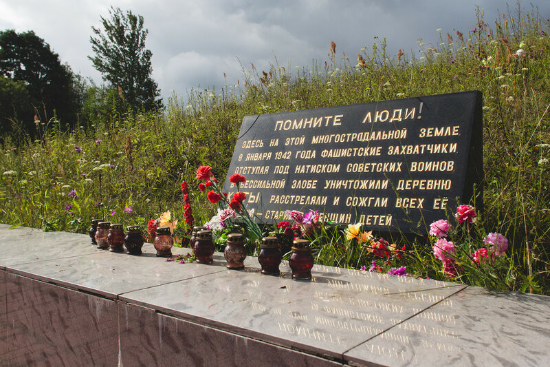
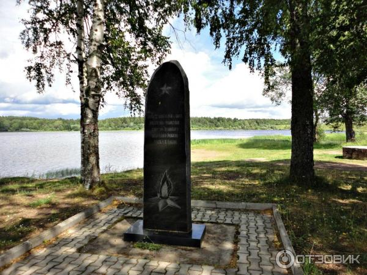
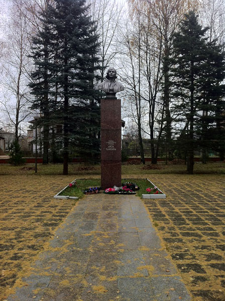

Храм Рождества Иоанна Предтечи - уникальнейший памятник древнерусской архитектуры. Трехярусная деревянная церковь высотой 45 метров, на 8 метров выше знаменитой Преображенской церкви в Кижах. Деревянный храм стоит не на фундаменте, а на мощных валунах. В качестве гидроизоляции использовали березовую кору. Это тип башнеобразного храм, который был широко распространён в XVI-XVII веке. Внутри сложная конструкция срубов видна лишь с чердака: в интерьере храма плоский потолок призван задерживать тепло. В интерьере сохранились только тябла (полки для икон) конца XVII века, сами же старинные образа все исчезли в 1950-1970-х гг. Храм уцелел, несмотря на все исторические испытания. В 1960 году храм реставрировали , заменив нижнюю часть сруба и воссоздв утраченную еще в начале XIX века галерею-гульбище.
По одному преданию, церковь была построена в знак победы Александра Невского в XIII веке над литовцами на том месте, где был разгромлен враг. Другое предание говорит о том, что в давние времена торговые люди шли по этим местам из Новгорода и несли с собой две иконы Иоанна Предтечи. Остановились на высоком берегу на отдых. А когда собрались продолжить путь, то не смогли поднять иконы и оставили их на этом удивительно красивом месте, где и возвели церковь. Нынешний храм - скорее всего второй от основания погоста. Он построен в 1694 году (в 1697 году установлен иконостас, и эта дата иногда встречается как дата постройки храма.
В 1985 году 5 мая к 40-летию Победы в Великой Отечественной войне на месте деревни был установлен памятник архитекторов Бродского и Покровского. Мемориальный комплекс представляет собой некое подобие крыльца, состоящего лишь из нескольких обгоревших бревен и женщину с ребёнком на руках, которая прислонилась к одной из опор.
В 1942 году 9 января около девяти часов утра в деревню вторглись немецкие войска. Палачи уничтожили 78 её мирных жителей - это точно установленное количество погибших, среди них девочка, которой было девять месяцев, и пожилая женщина, которой исполнилось 80 лет. Только нескольким людям удалось выжить.
Деревня продолжала существовать после трагедии вплоть до 1960 года, на тот момент жилым в деревне оставался всего один дом. А в 1970 году деревня Ксты официально перестала существовать
Памятник, представляющий собой бюст Лизы Чайкиной работы скульптора Н.В. Томского, установлен в сквере на территории мемориала Воинской славы. С обеих сторон от памятника расположены 16 бетонных плит с именами партизан и воинов, принимающих участие в борьбе с немцами за освобождение родной Пеновской земли. Лиза Чайкина родилась 28 августа 1918 года в деревне Руно Пеновского района Тверской области. Война застала Лизу Чайкину в г. Калинине. В числе первых она вступила в партизанский отряд.
Участвовала в сражениях, минировала дороги, взрывала мосты, стала отважной разведчицей. Часто ходила по деревням рассказывала о героизме и мужестве воинов, о зверствах фашистов. В каждое село Лиза Чайкина несла веру в победу. Земляки ласково называли ее «Чайка». Во время одного из рейдов Лизу Чайкину выдал предатель. Отважную партизанку подвергли страшным пыткам, но мужественная девушка не проронила ни слова. 23 ноября 1941 года Елизавета Чайкина была расстреляна фашистами в поселке Пено. Последними ее словами были: «Погибаю за нашу Родину! Победа будет за нами!». Пытки не сломили Лизу, и она была расстреляна на берегу Волги, где сейчас стоит памятник.
6 марта 1942 года за мужество и героизм Е.И.Чайкиной посмертно присвоено звание Героя Советского Союза.